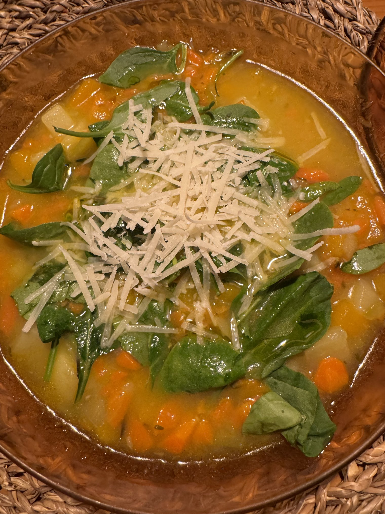

Minestrone
Ingredients
4×
- 1 cebolla
- aceite de oliva
- 2 zanahorias
- 300 g de calabaza
- 2 patatas
- 1.5 l de caldo de verduras
- 2 puñados de espinacas frescas
- parmesano

Preparación
Paso 1
Rehogar 1 cebolla picada en aceite de oliva. Añadir 2 zanahorias, 300 g de calabaza y 2 patatas en dados.
Paso 2
Cubrir con 1.5 l de caldo de verduras, salar y cocer 25min.
Paso 3
Añadir 2 puñados de espinacas frescas al final y servir con parmesano rallado.